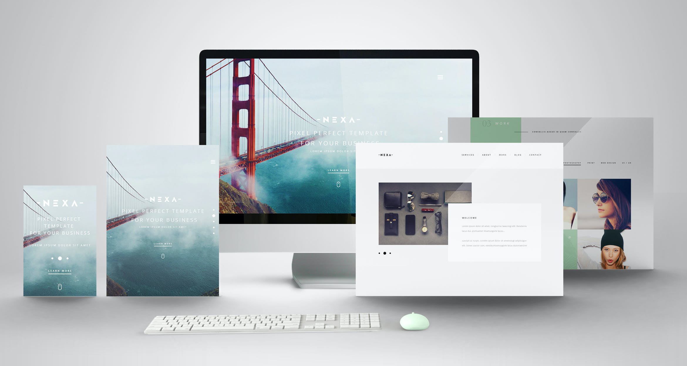

作品

1年生後期「Webデザイン」最初の課題。個人が感じる「和風っぽさ」の曖昧さを理解するグループディスカッションの後、その和風っぽさを醸し出しているビジュアル要素「色」「書体」「画像」「レイアウト」を設計し、和風カフェのWebサイトトップページに反映させました。
和風をテーマにして、カフェのパソコン用 Web サイトをデザインしましょう。
| 横幅 | メインコンテンツを 980px ～ 1080px |
|---|---|
| 画像、ロゴ | 準備されたものを使用 |
| 開店時間 | AM10:00 ～ AM0:00 |
ある程度、雰囲気がつかめたら、コンテンツマップの内容をワイヤーフレームで整理していきました。

デザイン仕様書の項目を基に「和風・カフェ」のデザイン要素を決めました。
今回は、初めてAdobe XdでWebサイトをデザインしました。画像処理はPhotoshop、アイコンやバナーなどはIllustratorで作成し、Xdにてレイアウトしました。Photoshopに比べてサクサク動く反面、精細なデザイン向きではない感じがしました。
開発が進む名古屋駅にポツンとある古民家をイメージしました。街の喧騒の中の異空間感を出すために、店内をメイン画像に選択しました。
全体図をみる
▲クリックすると、大きな画像をみることができます。
私は、日本に生まれて、日本に育ちました。歴史も好きで各地の寺院などにも訪れています。しかし、和風っぽさをWebサイトに反映させようとした時、一概に和風を表すことができないことに気付きました。
和風っぽさに限らず、「かわいい」「レトロ」などビジュアルの雰囲気を表す言葉として、使われていますが、よく吟味し、論理的に理解しないと、説得力のあるデザインに盛り込めないということを学ぶことができました。